Training Multi-Agent Systems: From MAS Generators to Co-Evolving Agents
Multi-agent systems (MAS) have become an increasingly practical way to tackle complex tasks that are difficult for a single model to solve reliably. In research, long-horizon reasoning, and open-ended product workflows, we are already seeing systems where multiple agents divide roles, exchange feedback, and iteratively improve results.
In this post, I want to share a simple view of how I think about training MAS. My focus is not just on how to design an agent workflow, but on how to make multi-agent collaboration itself learnable.
This post is adapted from a research sharing I gave at TikTok AIIC Innovation Center on October 15, 2025. I keep the structure close to the original talk, while adding paper references for the main examples discussed below.
Why Multi-Agent Systems Matter
A multi-agent system is a collaborative system composed of multiple agents, each with its own decision-making and execution ability. Agents can communicate, collaborate, compete, or play complementary roles to solve problems that are hard to handle within a single context window.
The motivation is straightforward. Even though large language models already have strong general capabilities, they still struggle in open and dynamic environments. Long tasks quickly stress context length, memory management, tool feedback accumulation, and control stability. A single model may be forced to handle planning, execution, verification, and recovery all at once.
MAS helps because it allows us to isolate contexts and roles. One agent can focus on high-level reasoning, another on execution, and another on verification. As single-agent models improve, the ceiling of the overall system also rises.
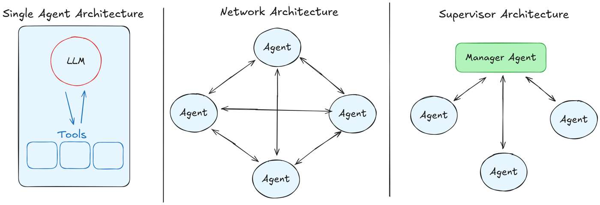
Why MAS Training Matters
Most current MAS pipelines are still manually designed. Developers define roles, prompts, communication protocols, and execution order by hand. This can work, but it leads to static collaboration: once task distributions or feedback mechanisms change, the whole system often needs to be redesigned.
MAS training asks a harder but more interesting question: can we turn successful collaboration trajectories into model parameters? In other words, can a system learn to collaborate, adapt, and evolve, instead of repeatedly relying on test-time trial and error?
My working view is that the real challenge is no longer just how to build MAS, but how to make MAS itself trainable.
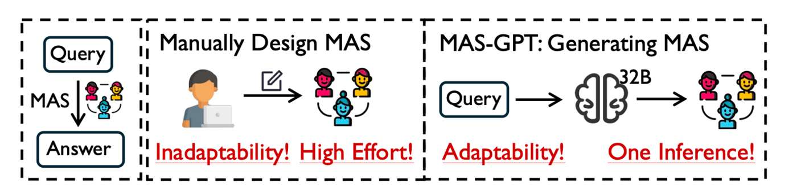
Three Directions for MAS Training
I find it helpful to organize the problem into three directions:
1. Training an MAS generator. Given a task, can a model automatically generate a multi-agent system rather than requiring humans to build one?
2. Training one critical component. If the architecture is fixed, can we train the most important agent to make the overall system stronger and more controllable?
3. Training all agents for co-evolution. Can multiple agents improve together in a stable way, rather than each one optimizing in isolation?
Direction 1: Training an MAS Generator
The first direction starts from a simple observation: today, most MAS pipelines are manually built. Systems such as Self-Refine, MetaGPT, and AutoGen depend heavily on human-written roles, prompts, and communication designs. If humans can handcraft MAS, perhaps a model can learn to do the same.
This is the motivation behind MAS-GPT. The key idea is to represent a multi-agent system as code. This provides a compact and expressive search space where agent profiles can be parameterized, interactions can be represented through structured variable passing, and iterative collaboration can be naturally modeled through loops.
Reference: MAS-GPT: Training LLMs to Build LLM-based Multi-Agent Systems.
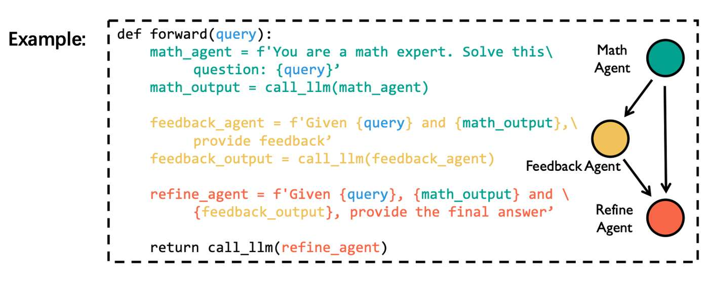
To construct training data, we first collected a pool of manually designed MAS instances and paired them with queries from several datasets such as MATH, GSM8K, MBPP, MMLU, and SciQ. We then scored query-MAS pairs through execution and evaluation. After that, we performed two types of filtering: inter-consistency, which encourages similar queries to map to similar architectures, and intra-consistency, which refines a given MAS so that its roles and logic better match a specific query.
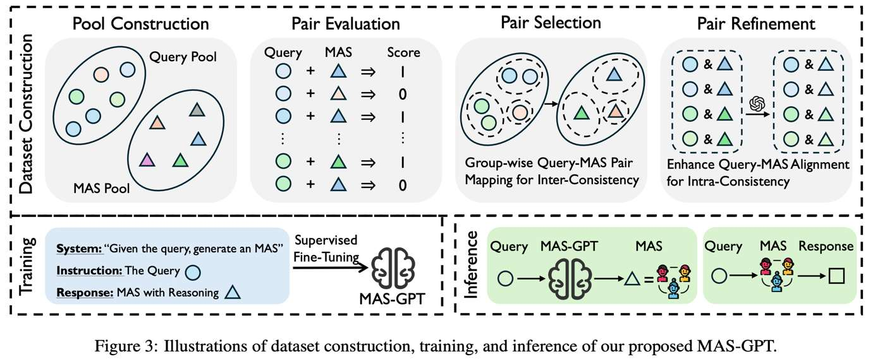
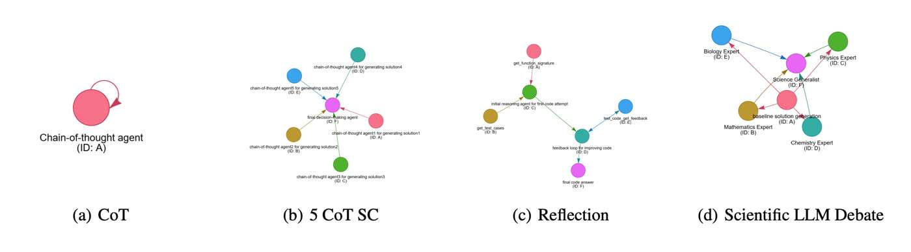
The final training unit becomes a triplet of (query, reasoning, refined MAS). This
turns designing MAS itself into a learnable generation problem.
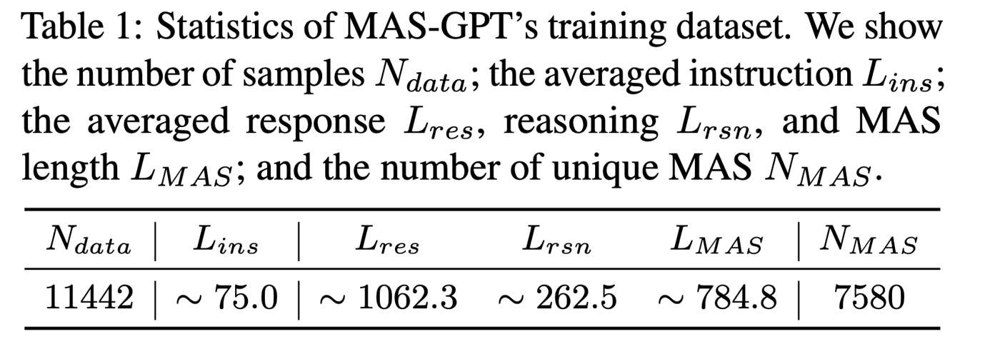
In practice, the resulting model can generate systems that generalize better and reduce redundant collaboration compared with hand-written pipelines. The next two figures should be read together: the left one focuses on task generalization, while the right one focuses on efficiency.
Experimental Pair: Generalization vs. Efficiency
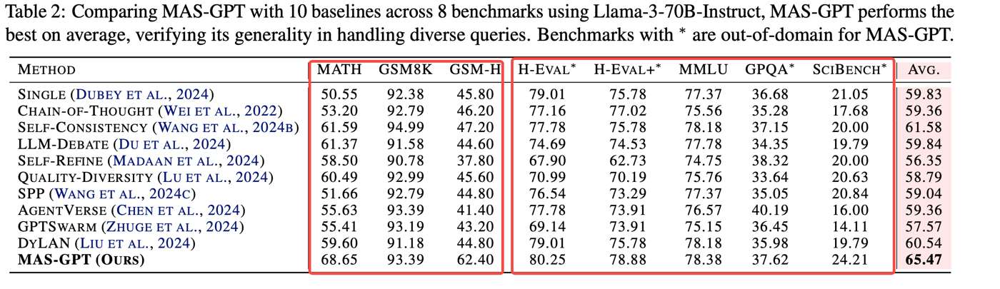
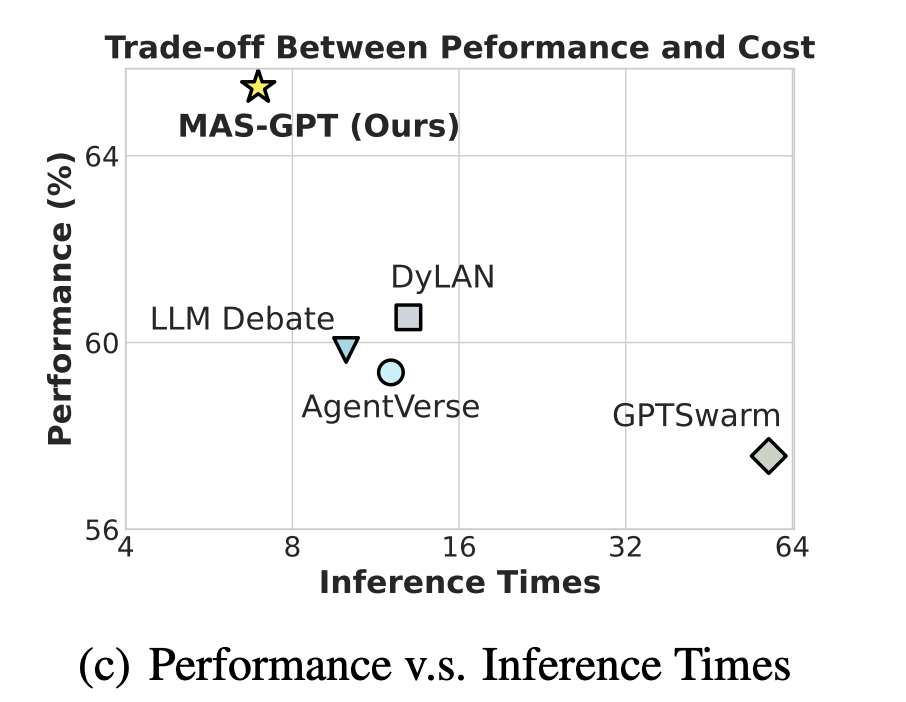
Direction 2: Training One Agent Inside MAS
The second direction focuses on training a key component after the overall architecture has been decided. A good example is BrowseMaster.
In realistic search-heavy tasks, a single agent often struggles to maintain both search breadth and reasoning depth. Complex information-seeking may require hundreds of tool calls across many pages or sources. This quickly overloads the context and breaks memory and control stability.
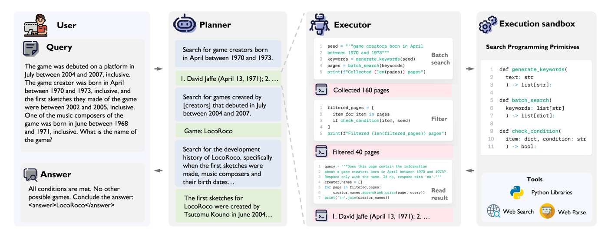
BrowseMaster addresses this by separating reasoning from execution. A planner handles high-level decisions, while an executor interacts with tools and collects evidence. The executor is not purely prompt-driven: it uses code-like representations and structured functions such as keyword generation, batch search, and result checking.
Reference: BrowseMaster: Towards Scalable Web Browsing via Tool-Augmented Programmatic Agent Pair.
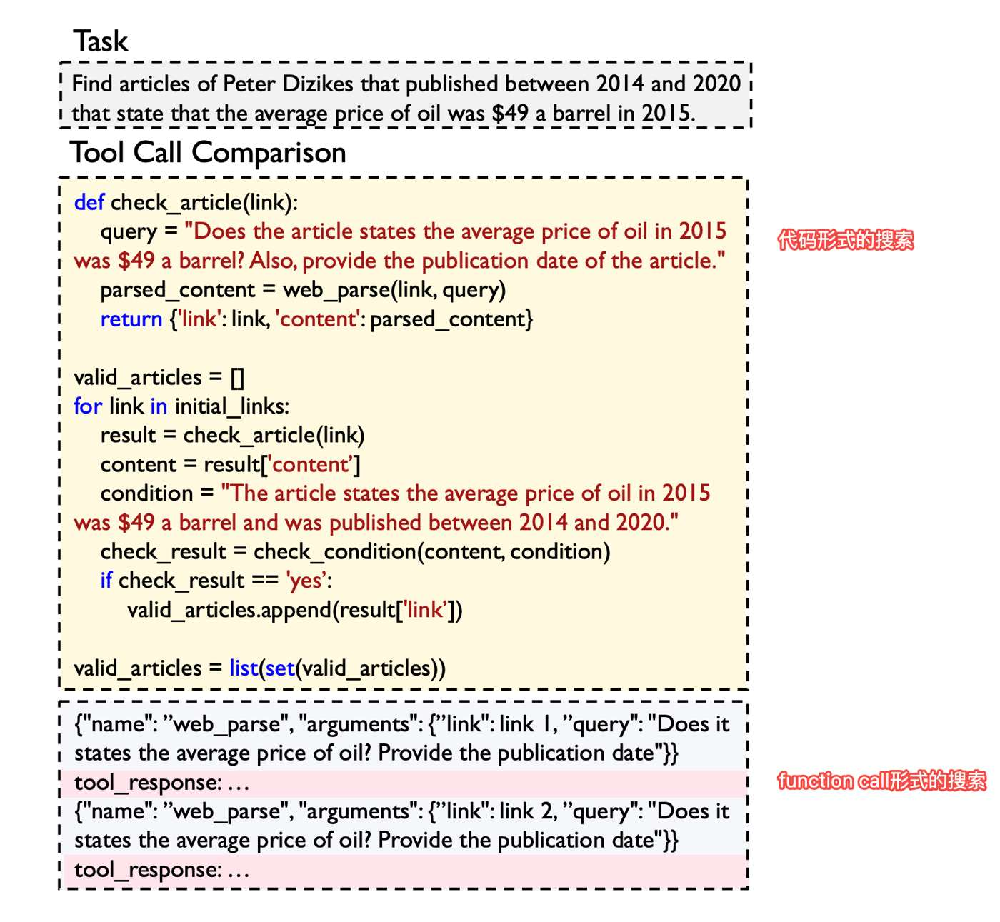
This gives two major benefits. First, it reduces redundancy, since reusable functions replace repeated low-level prompting. Second, it greatly improves flexibility and search scalability, since functions can be composed and nested programmatically.
The training insight here is that the executor can be optimized as its own unit. Once the executor learns strong programmatic search behavior, it can be inserted back into the MAS and work together with the planner in a stronger closed loop.
The experimental section has three parts. First, the main result shows end-task performance. Then an ablation isolates why planner-executor collaboration matters. Finally, two scaling plots explain how BrowseMaster behaves as search depth and tool usage grow.
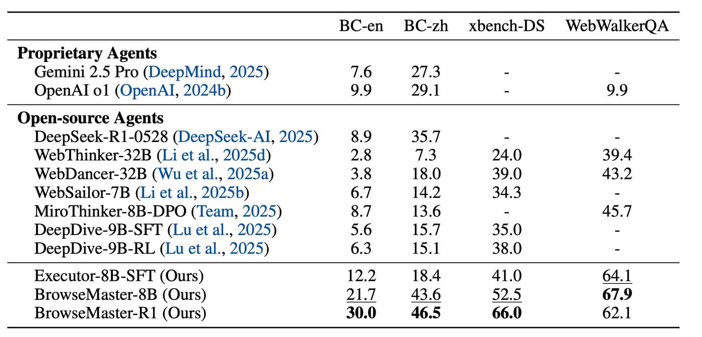
Experimental Pair: Ablation vs. Search Scaling
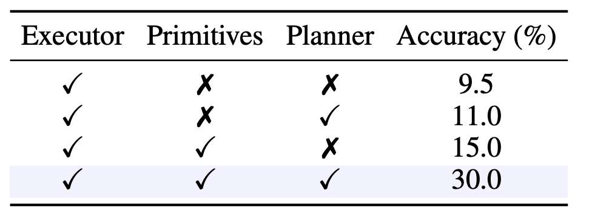
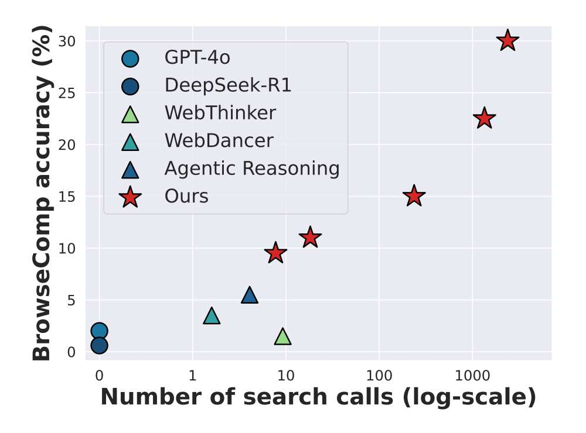
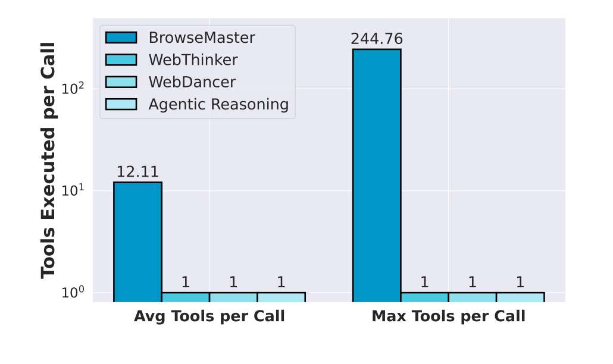
Direction 3: Training All Agents for Co-Evolution
The third direction is the most ambitious one: training all agents so they can co-evolve.
A motivating example comes from software engineering tasks, where MAS can iteratively improve through interaction with execution environments and test feedback. This raises a natural question: can the experience gained during interaction be preserved in the model itself?
Related paper: SWE-Dev: Evaluating and Training Autonomous Feature-Driven Software Development.
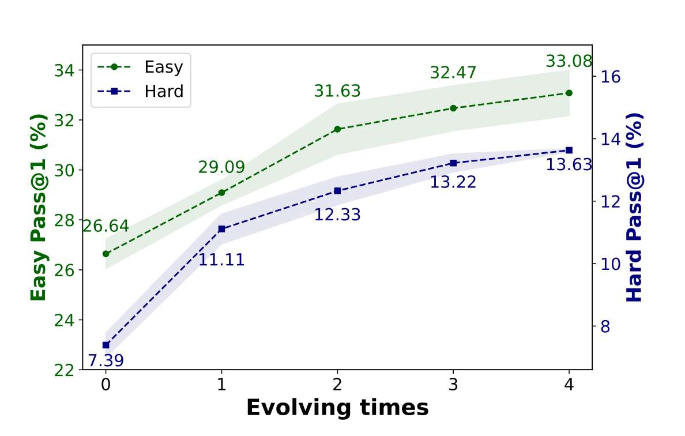
One practical setup is to simplify the system into a planner-coder structure. The planner assigns subtasks, coders generate candidate code, and execution feedback is passed back into the system. We can view this as a kind of textual backpropagation at the interaction level. Then, after enough trajectories are collected, successful planner traces and successful coder traces can be separately fine-tuned.
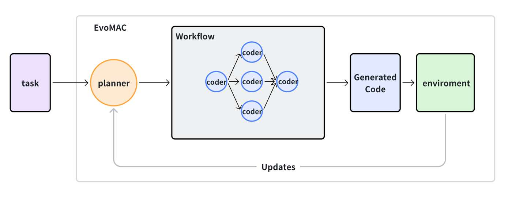
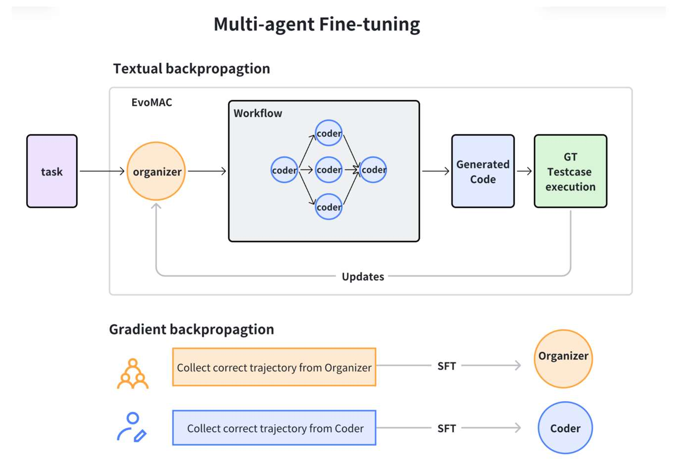
Single-round training often helps. But multi-round training turns out to be much harder. Once agents change behavior, the data distribution shifts. New supervision is no longer perfectly aligned with the old parameter state, and repeated SFT can easily become unstable or contradictory.
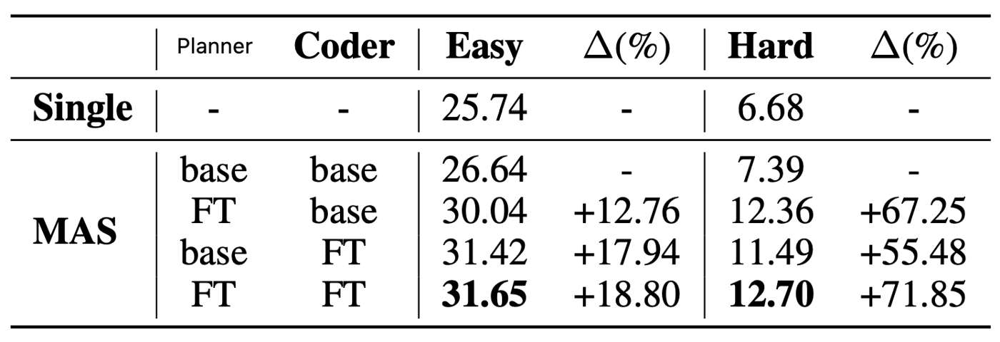
This is why reinforcement learning becomes attractive. Instead of repeatedly forcing the model onto changing supervised trajectories, RL may offer a more natural way to optimize collaboration over multiple iterations. The next figures separate three messages: multi-round SFT instability, RL as an alternative training framework, and the remaining coordination gap in the final metrics.
Experimental Pair: Two SFT Views of Multi-Round Instability
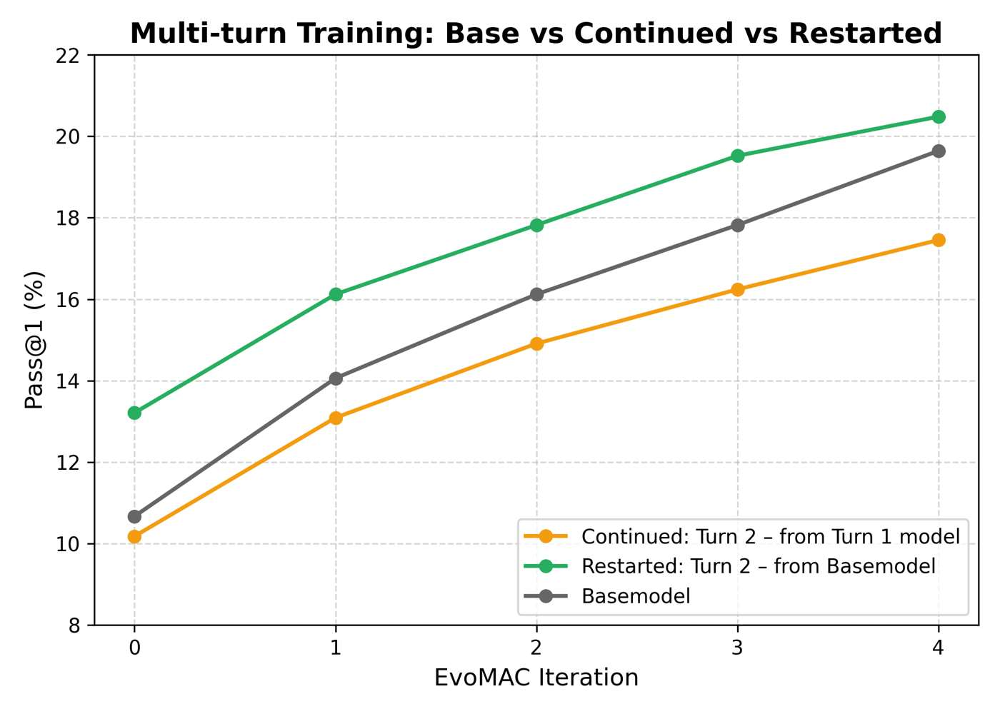
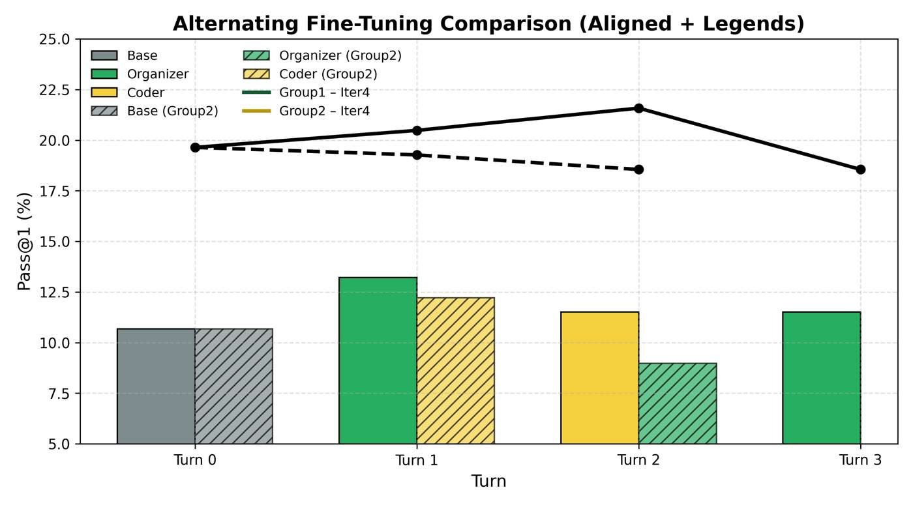
For the RL stage, I find it useful to frame the problem as MAS-RL for coder-verifier co-evolution. Realistic software development is naturally a loop: write code, write tests, and then improve the solution based on execution feedback. To learn this loop, the system needs two complementary abilities: generating runnable code and constructing tests that can actually expose mistakes.
If these two abilities are mixed inside a single model, the training signal can easily become blurry: the model cannot cleanly distinguish whether an improvement comes from better code generation or from stronger tests. That is why we separate the roles. The Coder focuses on generating high-quality code, while the Verifier focuses on generating high-discriminative tests.
The interaction protocol follows a Best-of-N style mechanism. The Coder samples multiple candidate programs, the Verifier samples multiple candidate test sets, and all code-test combinations are executed to form an execution matrix. The system then selects the strongest code according to test outcomes, and finally uses ground-truth tests as the outer signal for evaluation and optimization. This gives us a closed loop in which stronger tests push the Coder toward better code, and stronger code in turn forces the Verifier to become sharper.
For the concrete reward design, we build on the ideas in
CURE: Co-Evolving LLM Coder and Unit Tester via Reinforcement Learning.
In the simplified notation I use for this talk, the two roles receive different rewards:
R_C = R_GT + lambda_ver * R_Verifier
for the Coder, and
R_V = R_P - lambda_len * Len
for the Verifier.
Intuitively, the Coder is rewarded for both passing ground-truth tests and agreeing with the signal provided by the Verifier, while the Verifier is rewarded for precision, namely whether it correctly distinguishes good code from bad code, with an additional penalty on invalid or unnecessarily long tests. In implementation, CURE instantiates this idea through normalized execution-based rewards for code and sign-and-scale style rewards for tests. Here I keep the blog-level explanation simple, but the overall principle is the same: separate the roles, separate the reward signals, and let the two agents improve through repeated interaction.
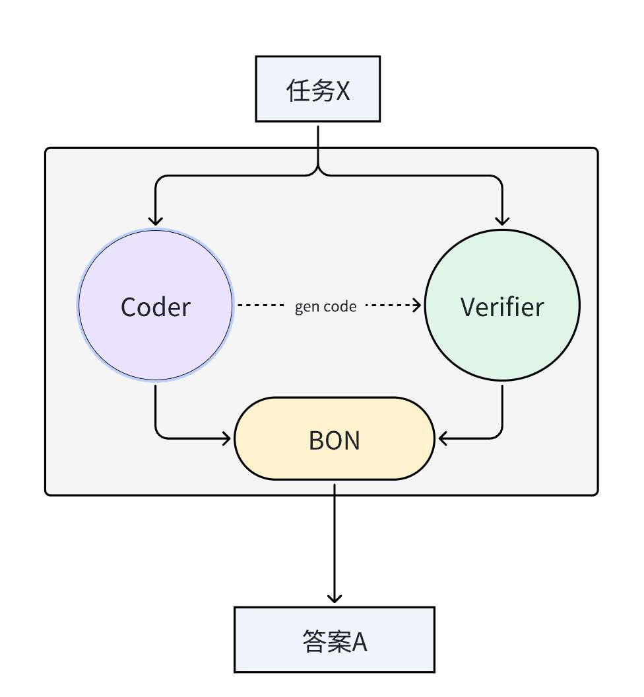
Experimental Pair: RL Result Table vs. RL Trend Curves
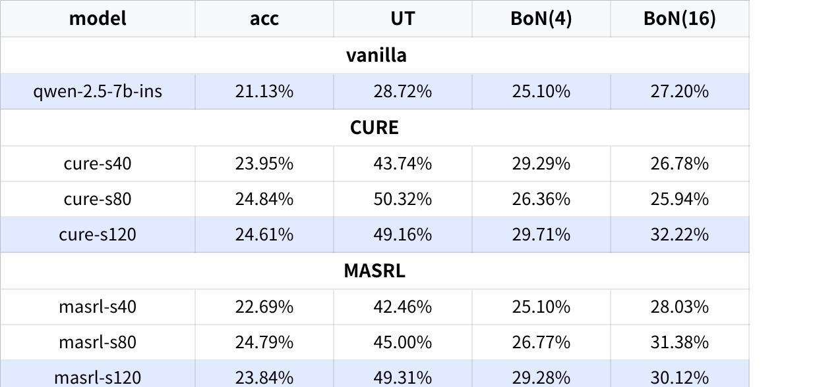
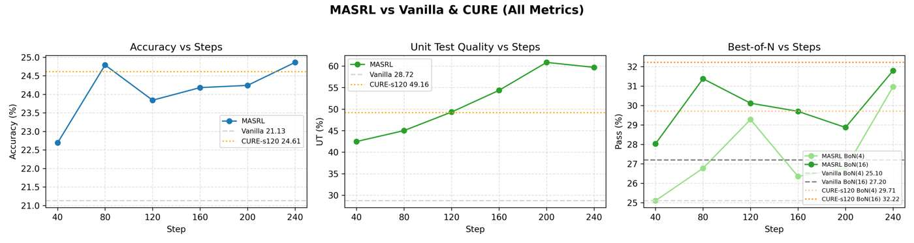
What Makes MAS Training Hard
In my view, the central difficulty of MAS training is not just optimization. It is attribution.
In a multi-agent pipeline, the final reward is often clear, but assigning credit to the right agent is not. A planner may receive a clean success or failure signal, while a worker only handles subtasks whose contribution is indirect. This makes credit assignment especially difficult.
Another challenge is that many agent trajectories are noisy. A large fraction of intermediate steps can be redundant, inefficient, or simply wrong. Filtering and evaluating trajectories therefore becomes as important as the training algorithm itself.
Finally, reward alignment across agents matters. If the system is not carefully designed, different agents may optimize local goals and stop collaborating effectively. This is a familiar problem in multi-agent reinforcement learning, and it remains equally important for LLM-based MAS.
Open Questions I Care About
Several questions feel especially important to me right now:
How should we assign credit to different agents in long interaction traces? What kinds of tasks truly require multi-agent collaboration rather than just a stronger single agent? Is MAS training best framed as direct supervision, multi-step self-improvement, or reinforcement learning? And how should we design rewards so that agents optimize for collaboration rather than isolated behavior?
There is also a deeper dilemma: if a task can already be solved well by a single agent, then MAS may be unnecessary. But if a task truly benefits from MAS, it is often exactly the kind of task that is difficult to train in a stable way.
Closing Thoughts
Compared with single-agent systems, multi-agent systems are more naturally tied to iteration, decomposition, and co-evolution. That is what makes them exciting, but also what makes them hard.
My current takeaway is simple: designing MAS is not enough. If we want robust, adaptive, and scalable multi-agent systems, we need to understand how to train collaboration itself.
If you are interested in repo-level coding, tool use, or multi-agent training, I would be very happy to discuss.